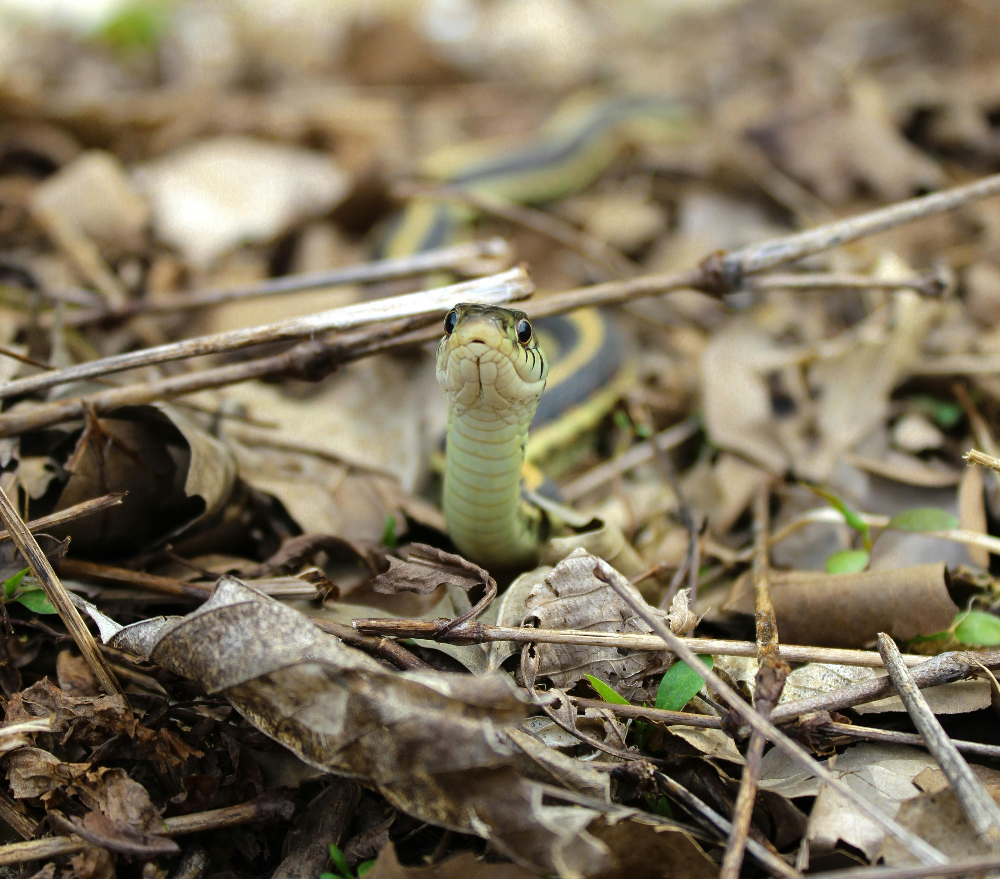

"The wildlife and its habitat cannot speak, so we must and we will"
- Theodore Roosevelt

The mission of this website is to provide a clear and accessible field guide to Vermont’s amphibians and reptiles, helping users identify and understand native species across the state. It also supports conservation efforts by offering resources that encourage the protection of these animals and their habitats.